Derive Study Area
Our study area covers all sub-districts and district of Kota Balipapan, Kota Samarinda, and selected kecamatan (districts) and sub-districts of North Penajam Paser and Kutai Kartanegara Regencies.
Kutai Kartanegara : Anggana, Loa Janan, Loa Kulu, Marang Kayu, Muara Jawa, Samboja, Sanga Sanga, Sebulu Tenaggarong, Tenggarong Seberang and Muara Badak.
North Penajam Paser (Penajam Paser Utara) Regency: Babulu, Penajam, Sepaku and Waru.
Data sources are found at the end of our Overview page
1. Load Vector Layer
We extracted BATAS_DESA_DESEMBER_2019_DUKCAPIL_KALIMANTAN_TIMUR.shp from Sub-district Boundary & Census Data 2019, Indonesia folder in the Browser panel.
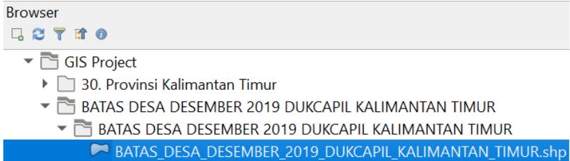
2. Select Study Area From East Kalimantan Layer
- At layer panel, right-click on BATAS_DESA_DESEMBER_2019_DUKCAPIL_KALIMANTAN_TIMUR.shp.
- From the context menu, click on Open Attribute Table.
- At the Attribute Table window click on Select feature using an expression icon.
- At the upper left corner of the window, click on the Expression tab.
- In the Expression tab, type the following expressions:
“KECAMATAN” = ‘ANGGANA’ or “KECAMATAN” = ‘LOA JANAN’ or “KECAMATAN” = ‘LOA KULU’ or “KECAMATAN” = ‘MARANG KAYU’ or “KECAMATAN” = ‘MUARA JAWA’ or “KECAMATAN” = ‘SAMBOJA’ or “KECAMATAN” = ‘SANGA SANGA’ or “KECAMATAN” = ‘SEBULU’ or “KECAMATAN” = ‘TENGGARONG SEBERANG’ or “KECAMATAN” = ‘MUARA BADAK’ or “KECAMATAN” = ‘BABULU’ or “KECAMATAN” = ‘PENAJAM’ or “KECAMATAN” = ‘SEPAKU’ or “KECAMATAN” = ‘WARU’ or “KECAMATAN” = ‘TENGGARONG’ or “KAB_KOTA” = ‘KOTA SAMARINDA’ or “KAB_KOTA” = ‘KOTA BALIKPAPAN’
- The result should look like the screenshot below
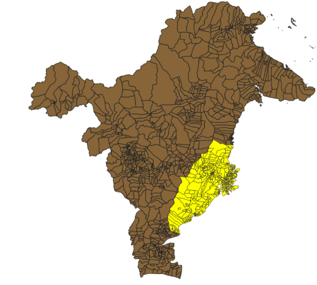
- The study area is then derived from the selected features of the BATAS_DESA_DESEMBER_2019_DUKCAPIL_KALIMANTAN_TIMUR.shp.
- At layer panel, right-click on BATAS_DESA_DESEMBER_2019_DUKCAPIL_KALIMANTAN_TIMUR.shp.
- Select Export → Save Selected Features As from the context menu.
- For Format:, select GeoPackage from the drop-down list.
- For Save as, click on the Browse button.
- Navigate to the folder where the QGIS project is saved.
- For File Name, type Indo.
- Click on the Save button.
You will return to Save Vector Layer as dialog window.
- For Layer Name, type Study Area.
- For CRS, click on the Browse button.
The Coordinate Reference System Selector dialog window appears.
- Click on DGN95 / Indonesia TM-3 Zone 54.1.
- Click on OK to update the selection.
A new geospatial layer called Study Area is now added to the Layers panel, just like the screenshot below.
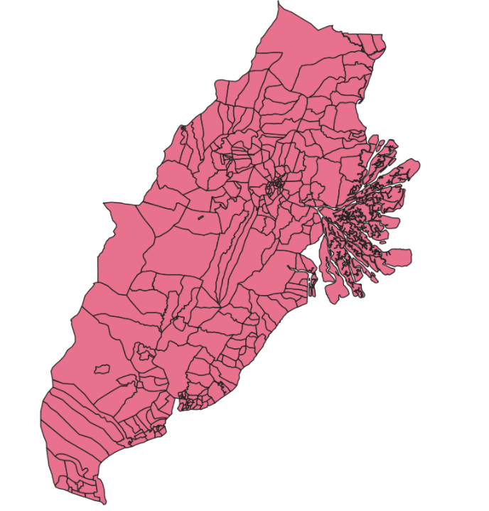
Preparing Vector Layers of Site Selection Criteria
1. Natural Forest
- From the Browser panel, look for the folders of the individual Topography data of the City/Regency downloaded earlier. It should look like the screenshot below.
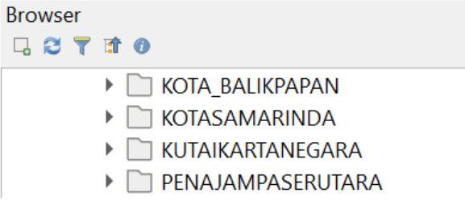
- From each of the individual folders, load all the natural forests vector layers (NONAGRIALANG_AR_50K / NONAGRIHUTANBASAH_AR_50K / NONAGRISEMAKBELUKAR_AR_50K / NONAGRIHUTANKERING_AR_50K) by clicking on the shapefiles.
- Once all the relevant vector layers have been added to the Project, the Layers panel would appear as the screenshot below
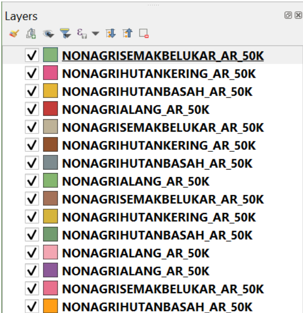
Merge all natural forests vector layer
- To merge all the natural forests vector layer, from the menu bar, click on Vector → Data Management Tools → Merge Vector Layers
- From Merge Vector Layers window, click on the right-most button of the Input Layers as shown below
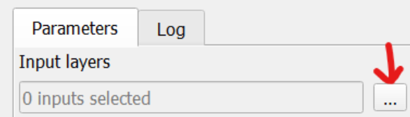
- Proceed to select all the natural forests layer to be merged, just as shown in the screenshot below
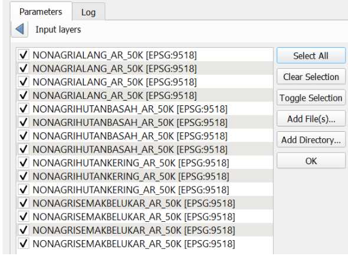
- Click the back arrow on the left side of Input Layers to go back to the initial page
- For Destination CRS, click on DGN95 to set the appropriate CRS to the Merged layer
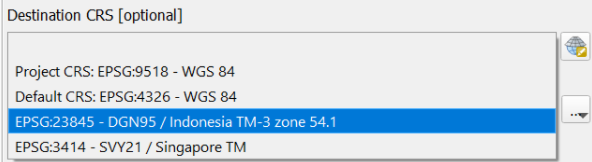
- Click on Run to execute the process
- The temporary Merged output layer will now appear on the Layers panel
- Right click on the Merged layer from the Layer panels and click on Make Permanent
- Save the file in ESRI Shapefile format
Clip Merged vector Layer to include only those within the study area
- As we are only interested in the natural forests that fall within the study area, we need to Clip the current Merged vector layer
- From the menu bar, click on Processing → Toolbox
- From the Processing Toolbox search bar, type Clip and click on Clip vector by mask layer
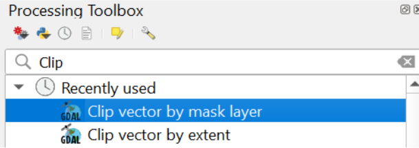
- From the Clip vector by mask layer window, set the Input Layer as Merged and the Mask layer as Study Area as shown in the screenshot below
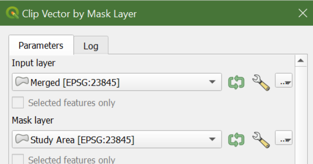
- Click Run to execute the process
Save Clipped layer into GeoPackage
- At the layer panel, right-click on the Clipped (mask) layer.
- Select Export → Save Features As from the context menu.
- For Format:, select GeoPackage from the drop-down list.
- For Save as, click on the Browse button.
- Navigate to the folder where the QGIS project is saved.
- Click on Indo.gpkg
- Click on the Save button.
You will return to the Save Vector Layer as dialog window.
- For Layer Name, type forest.
- For CRS, click on the Browse button.
The Coordinate Reference System Selector dialog window appears.
- Click on DGN95 / Indonesia TM-3 Zone 54.1.
- Click on OK to save the layer.
2. River
Load vector layers
- From the Browser panel, look for the folders of the individual Topography data of the City/Regency downloaded earlier. It should look like the screenshot below.
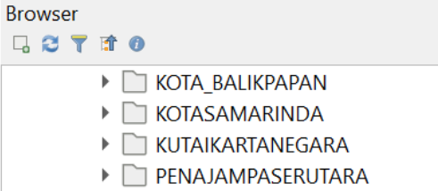
- From each of the individual folders, load all the river vector layers (SUNGAI_AR_50K) by clicking on the shapefiles.
- Once all the relevant vector layers have been added to the Project, the Layers panel would appear as the screenshot below

Merge all river vector layer
To merge all the river vector layer, from the menu bar, click on Vector → Data Management Tools → Merge Vector Layers
From Merge Vector Layers window, click on the right-most button of the Input Layers as shown below
- Proceed to select all the river layers to be merged, just as shown in the screenshot below
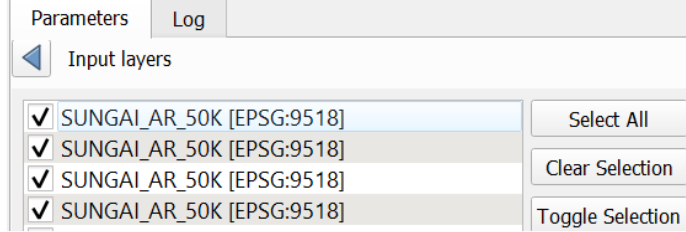
Click the back arrow on the left side of Input Layers to go back to the initial page
For Destination CRS, click on DGN95 to set the appropriate CRS to the Merged layer
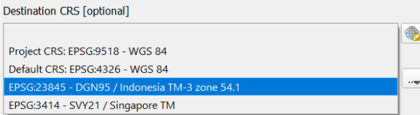
- Cick on Run to execute the process
- The temporary Merged output layer will now appear on the Layers panel
- Right click on the Merged layer from the Layer panels and click on Make Permanent
- Save the file in ESRI Shapefile format
Clip Merged vector layer to include only those within the study area
- As we are only interested in the river that fall within the study area, we need to Clip the current Merged vector layer
- From the menu bar, click on Processing → Toolbox
- From the Processing Toolbox search bar, type Clip and click on Clip vector by mask layer
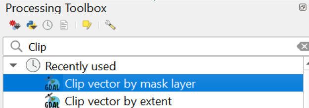
- From the Clip vector by mask layer window, set the Input Layer as Merged and the Mask layer as Study Area as shown in the screenshot below
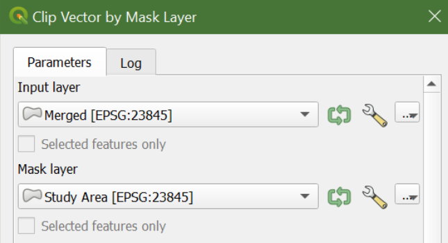
- Click Run to execute the process
Save Clipped layer into GeoPackage
- At the layer panel, right-click on the Clipped (mask) layer.
- Select Export → Save Features As from the context menu.
- For Format:, select GeoPackage from the drop-down list.
- For Save as, click on the Browse button.
- Navigate to the folder where the QGIS project is saved.
- Click on Indo.gpkg
- Click on the Save button.
You will return to the Save Vector Layer as dialog window.
- For Layer Name, type river.
- For CRS, click on the Browse button.
The Coordinate Reference System Selector dialog window appears.
- Click on DGN95 / Indonesia TM-3 Zone 54.1.
- Click on OK to save the layer.
3. Road Transport Network
Load vector layers
- From the Browser panel, look for the folders of the individual Topography data of the City/Regency downloaded earlier. It should look like the screenshot below.
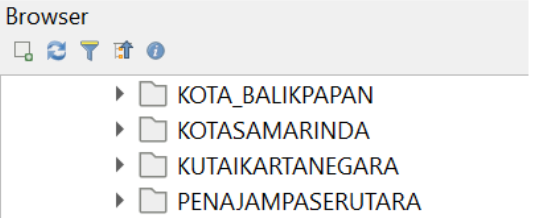
- From each of the individual folders, load all the road vector layers (JALAN_LN_50K) by clicking on the shapefiles.
- Once all the relevant vector layers have been added to the Project, the Layers panel would appear as the screenshot below
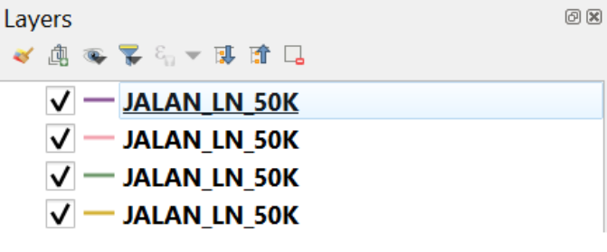
Merge All Road Vector Layer
- To merge all the road vector layer, from the menu bar, click on Vector → Data Management Tools → Merge Vector Layers
- From Merge Vector Layers window, click on the right-most button of the Input Layers as shown below
- Proceed to select all the road layers to be merged, just as shown in the screenshot below
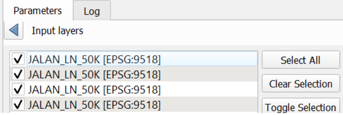
- Click the back arrow on the left side of Input Layers to go back to the initial page For Destination CRS, click on DGN95 to set the appropriate CRS to the Merged layer
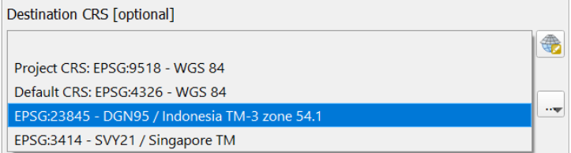
- Click on Run to execute the process
- The temporary Merged output layer will now appear on the Layers panel
- To remove duplicate, type Delete Duplicate Geometries on the Processing Toolbox
- Select Merged road layer as the Input layer
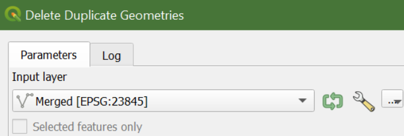
- Click Run to execute the process
- Right click on the Merged layer from the Layer panels and click on Make Permanent
- Save the file in ESRI Shapefile format
Clip Vector Layer to include only those in the Study Area
- As we are only interested in the road that fall within the study area, we need to Clip the current Merged vector layer
- From the menu bar, click on Processing → Toolbox
- From the Processing Toolbox search bar, type Clip and click on Clip vector by mask layer
- From the Clip vector by mask layer window, set the Input Layer as Merged and the Mask layer as Study Area as shown in the screenshot below
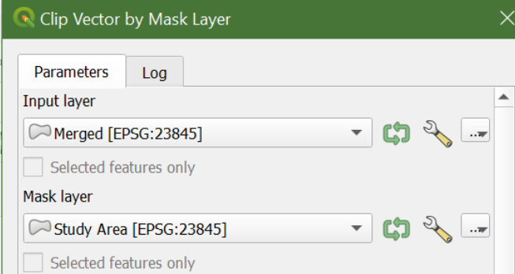
- Click Run to execute the process
Save Clipped layer into GeoPackage
- At the layer panel, right-click on the Clipped (mask) layer.
- Select Export → Save Features As from the context menu.
- For Format:, select GeoPackage from the drop-down list.
- For Save as, click on the Browse button.
- Navigate to the folder where the QGIS project is saved.
- Click on Indo.gpkg
- Click on the Save button.
You will return to the Save Vector Layer as dialog window.
- For Layer Name, type road.
- For CRS, click on the Browse button.
The Coordinate Reference System Selector dialog window appears.
- Click on DGN95 / Indonesia TM-3 Zone 54.1.
- Click OK to save the layer.
4. Airport
Load Vector Layers
- From the Browser panel, look for the folders of the individual Topography data of the City/Regency downloaded earlier. It should look like the screenshot below.
- From each of the individual folders, load all the airport vector layers (AIRPORT_PT_50K) by clicking on the shapefiles.
- Once all the relevant vector layers have been added to the Project, the Layers panel would appear as the screenshot below
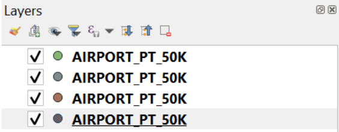
Merge All Airport Vector Layer
- To merge all the airport vector layer, from the menu bar, click on Vector → Data Management Tools → Merge Vector Layers
- From Merge Vector Layers window, click on the right-most button of the Input Layers as shown below
- Proceed to select all the airport layers to be merged, just as shown in the screenshot below
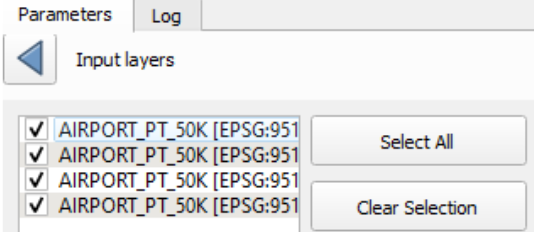
- Click the back arrow on the left side of Input Layers to go back to the initial page For Destination CRS, click on DGN95 to set the appropriate CRS to the Merged layer
- Click on Run to execute the process
- The temporary Merged output layer will now appear on the Layers panel
- Right click on the Merged layer from the Layer panels and click on Make Permanent
- Save the file in ESRI Shapefile format
Select airports within the study area
- From the menu bar, click on Vector → Research Tools → Select by location
- The Select by Location window will appear on the screen
- For Select features from, select the Merged airport layer from the dropdown
- For Geometric predicate, check the are within checkbox
- For By comparing to the features from, select the Study Area vector layer from the dropdown
- The Select by Location window should appear as below
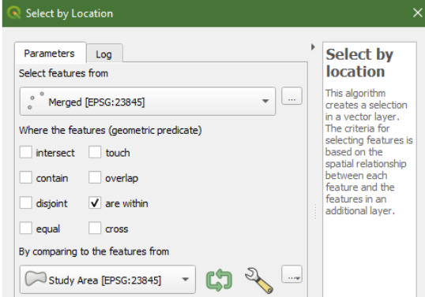
Save selected features into GeoPackage
- From the screen, you would be able to see that the airports within the Study Area have been highlighted in yellow
- To keep only the selected airports, right click on the Merged layer from the Layers panel
- Click on Export → Save Selected Features As
- From the Format dropdown, choose GeoPackage
- For the File name, click on the Browse button at the end of the type bar
- Navigate to the folder where the QGIS Project file has been saved
- Select Indo.gkpg and click on the Save button
- As for the Layer name, type airport
- For the CRS, select DGN95 from the dropdown
- Click Ok to Save the selected features
- Click Run to execute the process
5. Seaport
Load Vector Layers
- From the Browser panel, look for the folders of the individual Topography data of the City/Regency downloaded earlier. It should look like the screenshot below.
- From each of the individual folders, load all the seaport vector layers (PELABUHAN_PT_50K) by clicking on the shapefiles.
- Once all the relevant vector layers have been added to the Project, the Layers panel would appear as the screenshot below
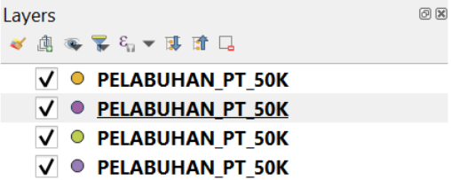
Merge All Seaport Vector Layer
- To merge all the seaport vector layer, from the menu bar, click on Vector → Data Management Tools → Merge Vector Layers
- From Merge Vector Layers window, click on the right-most button of the Input Layers as shown below
- Proceed to select all the seaport layers to be merged, just as shown in the screenshot below
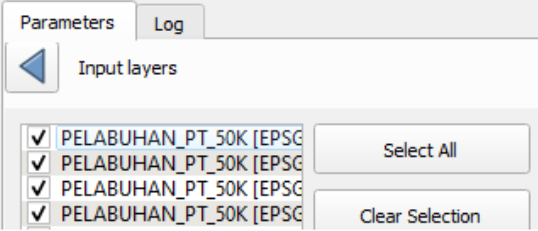
- Click the back arrow on the left side of Input Layers to go back to the initial page For Destination CRS, click on DGN95 to set the appropriate CRS to the Merged layer
- Click on Run to execute the process
- The temporary Merged output layer will now appear on the Layers panel
- Right click on the Merged layer from the Layer panels and click on Make Permanent
- Save the file in ESRI Shapefile format
Select seaports within the study area
- From the menu bar, click on Vector → Research Tools → Select by location
- The Select by Location window will appear on the screen
- For Select features from, select the Merged seaport layer from the dropdown
- For Geometric predicate, check the are within checkbox
- For By comparing to the features from, select the Study Area vector layer from the dropdown The Select by Location window should appear as below
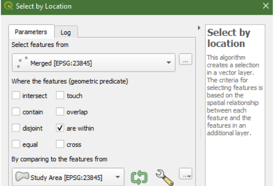
- Click Run to execute the process
Save selected features into GeoPackage
- From the screen, you would be able to see that the seaports within the Study Area have been highlighted in yellow
- To keep only the selected seaports, right click on the Merged layer from the Layers panel
- Click on Export → Save Selected Features As
- From the Format dropdown, choose GeoPackage
- For the File name, click on the Browse button at the end of the type bar
- Navigate to the folder where the QGIS Project file has been saved
- Select Indo.gkpg and click on the Save button
- As for the Layer name, type seaport
- For the CRS, select DGN95 from the dropdown
- Click Ok to Save the selected features
6. Forest Fire Hotspots
Load Vector Layers
- From the Browser panel, look for the folders of Indonesia’s Forest Fire Hotspots downloaded earlier. It should look like the screenshot below.
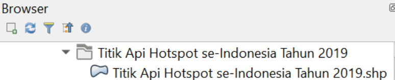
- From the folder, load forest fire hotspot vector layer (Titik Api Hotspot se-Indonesia Tahun 2019.shp) by clicking on the shapefiles.
- Once the relevant vector layer has been added to the Project, the Layers panel would appear as the screenshot below
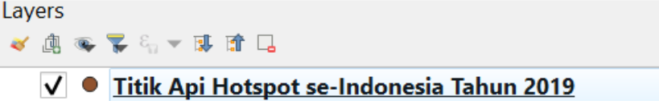
Select forest fire hotspots within the study area
- Click on the Titik Api Hotspot se-Indonesia Tahun 2019 vector layer from the Layers panel to make it the active layer
- Click on the Select Feature by Freehand tool from the icon bar
- Outline the Study Area
- From the screen, you would be able to see that the fire hotspots within the Study Area have been highlighted in yellow
Save selected features into GeoPackage
- To keep only the selected forest fire hotspots, right click on the Titik Api Hotspot se-Indonesia Tahun 2019 vector layer from the Layers panel
- Click on Export → Save Selected Features As
- From the Format dropdown, choose GeoPackage
- For the File name, click on the Browse button at the end of the type bar
- Navigate to the folder where the QGIS Project file has been saved
- Select Indo.gkpg and click on the Save button
- As for the Layer name, type forest_fire_hotspots
- For the CRS, select DGN95 from the dropdown
- Click Ok to Save the selected features
7. Slope
Load TIFF layer
- From the Browser panel, click on DEM SRTM 30m, digital elevation model at 30m resolution folder.
- Drag and drop DEM SRTM 30m Provinsi Kalimantan Timur.tif into Layers panel.
Clip layer by extent of study area
- From the menu bar, select Raster → Extraction → Clip Raster by Extent.
- For the input layer, select DEM SRTM 30m Provinsi Kalimantan Timur from the drop-down list.
- For Clipping extent, click on the icon at the end of the option then select Calculate from Layer.
- Select DEM from the drop-down list.
- When you are ready, click on the Run button.
- When the process is completed, read the process log to ensure that there is no error.
- Click on the Close button to close the dialog window.
- Notice that a new raster layer called Clipped (extent) is added into the Layers panel and displayed on the View as shown in the screenshot below.
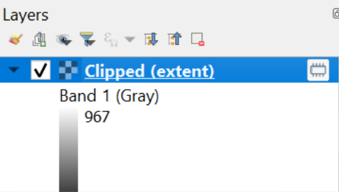
Save Clipped layer into GeoPackage
- At the Layers panel, right-click on the Clipped (extent) layer.
- Select Export → Save As from the context menu.
- For Format:, select GeoPackage from the drop-down list.
- For Save as, click on the Browse button.
- Navigate to the folder where the QGIS project is saved.
- Click on Indo.gpkg
- Click on the Save button.
You will return to Save Raster Layer as dialog window.
- For Layer name, type DEM.
- For CRS, click on the Browse button.
The Coordinate Reference System Selector dialog window appears.
- Click on DGN95 / Indonesia TM-3 Zone 54.1.
- Click on OK to save the clipped raster layer.
Derive slope raster layer
- From the menu bar, click on Raster → Analysis → Slope
- In the Slope dialog window, select DEM for the Input layer, just as shown in the screenshot below
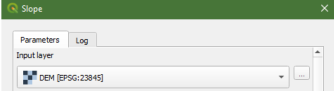
- Click on the Run button
- A temporary layer called Slope will be added to the Layers panel
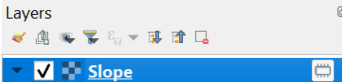
Save the Slope layer into GeoPackage
- From the Layers panel, right-click on the temporary Slope layer
- Click on Export → Save As
- Inside the Save Raster Layer As window, select GeoPackage as the Format
- For File name, click on the Browse button
- Navigate to the folder where the QGIS file is saved
- Select Indo.gpkg and click on the Save button
- For Layer name, type slope
- For CRS, select DGN95 from the dropdown
- For the Extent, click on the Calculate from Layer dropdown and select the DEM
- Set the horizontal and vertical resolutions as 5
- Click Ok to save the layer